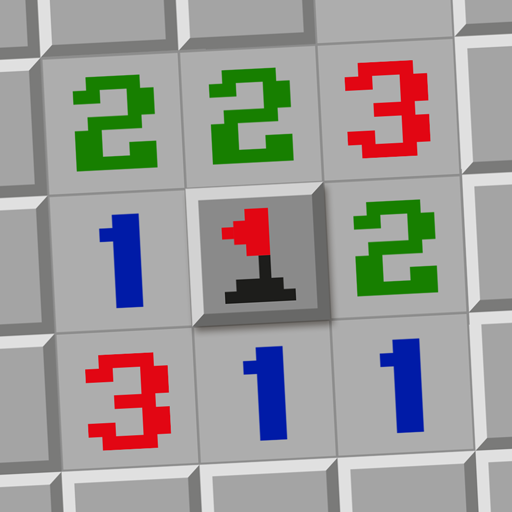
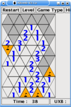
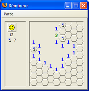
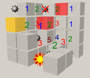
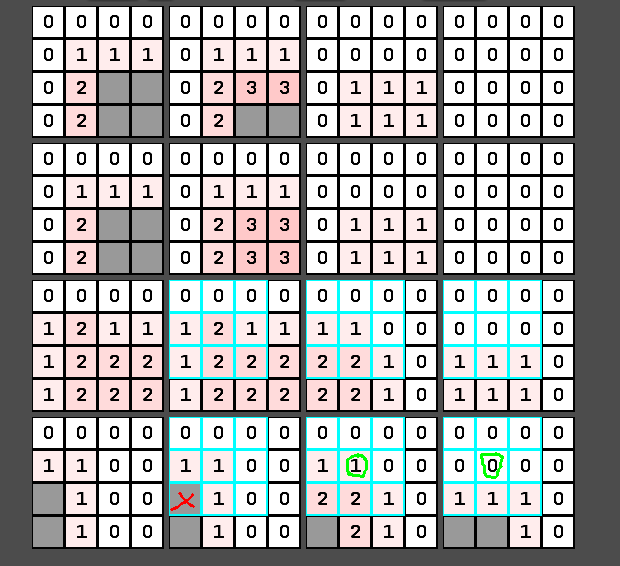

Miinaharava (engl. Minesweeper) on Robert Donnerin vuonna 1989 tekemä yksinpelattava älypeli. Peli on tehty usealle alustalle ja se tuli suuren yleisön tietoisuuteen 1992, kun se tuli Microsoftin Windows-käyttöjärjestelmään 3.1 alkaen.
Miinaharavassa käytössä on pelilauta, jonka kaikki ruudut ovat alussa paljastamattomia. Laudalla on piilossa miinoja, joiden paikat tulee merkitä lipuilla. Windowsin Miinaharavassa
Pelaaja klikkaa hiiren vasemmalla näppäimellä paljastamattomia ruutuja: jos ruudussa on miina, se räjähtää ja peli päättyy. Jos ruudussa ei ole miinaa, ruudussa näkyy, monessako ruudun kahdeksasta naapuriruudusta on miina. Mikäli klikatun ruudun yhdessäkään naapuriruudussa ei ole miinaa, peli paljastaa ensin kaikki siihen yhteydessä olevat ruudut, joiden naapurissa ei myöskään ole miinaa, sekä lisäksi tämän paljastetun alueen reunalla olevat ruudut, joiden naapurissa on miina. Tämä ei helpota mutta nopeuttaa peliä etenkin suurella laudalla, jossa on vähän miinoja, koska "nollaruutuja" ei tarvitse klikkailla yksitellen. Oikealla näppäimellä pelaaja voi merkitä lipulla paljastamattoman ruudun, jossa päättelee olevan miinan. Kun kaikki miinattomat ruudut on paljastettu, pelaaja on onnistunut ja hänen tuloksensa on käytetty aika.
Miinaharavan nopeimmat läpäisyt (Expert- vaikeustaso)
Muun muassa: Kolmioharava, Kuusikulmioharava, Kolmiulotteinen (3D), Neliulotteinen (4D)
   